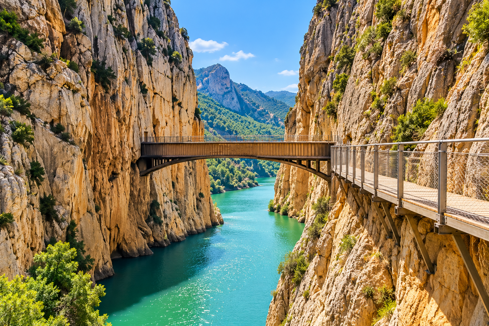

Caminito del Rey

El Caminito del Rey es uno de los senderos más espectaculares de Málaga. Su recorrido atraviesa el Desfiladero de los Gaitanes.
La ruta permite disfrutar de impresionantes paisajes y pasarelas situadas sobre las paredes del desfiladero.